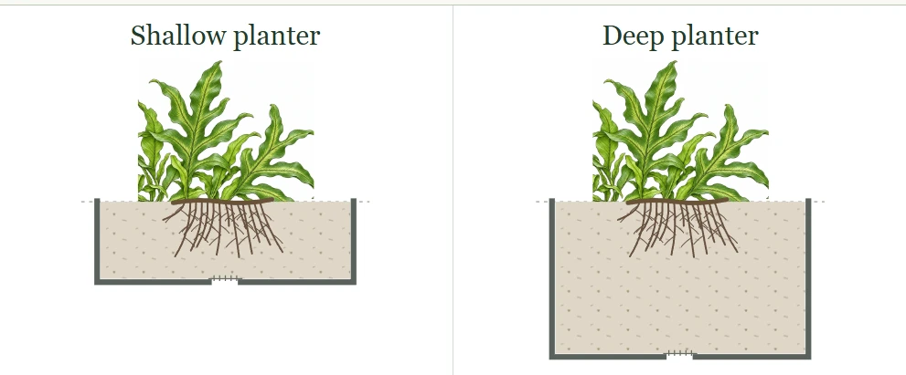
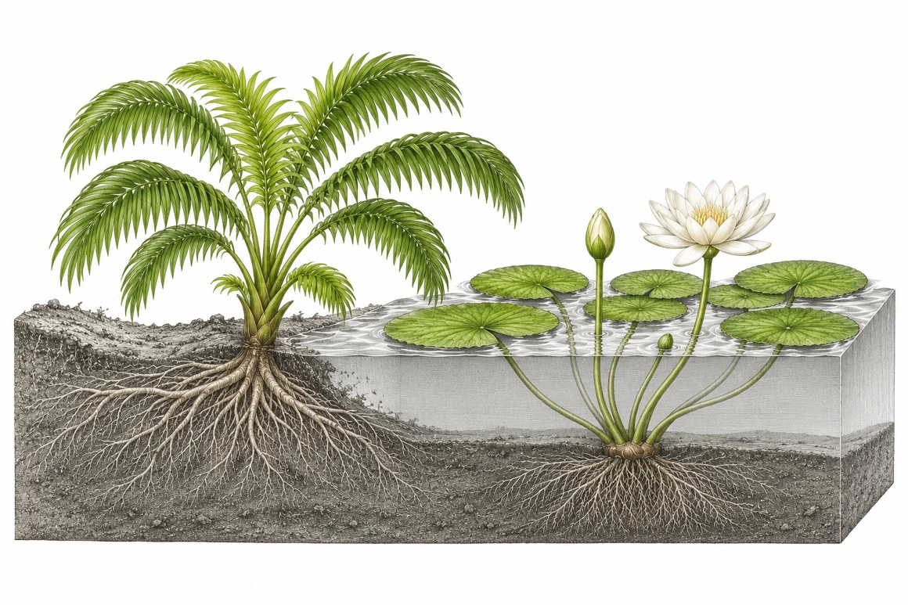
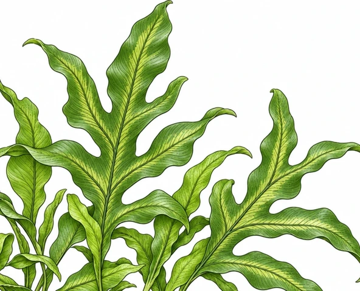
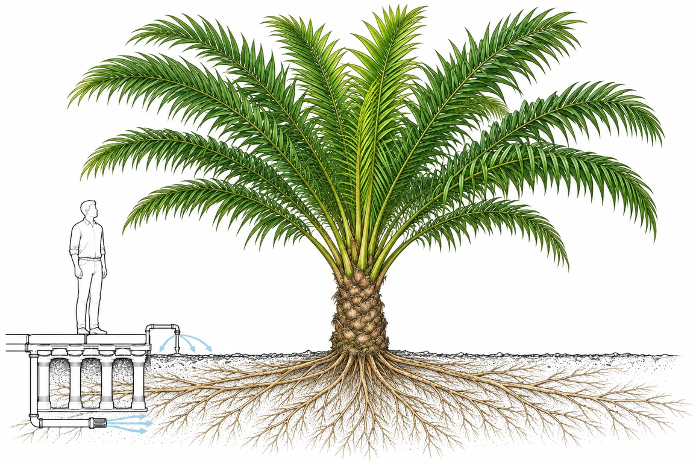
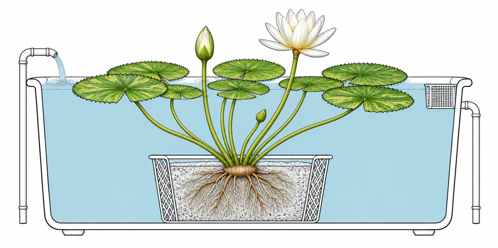

Mount
Grow against an upright pad. The saved fern model below uses this arrangement.
Plants
In Lekki, an oil palm gives two ferns a place to grow. Follow their roots, water and growing space, then explore all 100 plants in the catalogue.
Start with water and roots ↓
P1 · Proposed growing test
The wart fern has a stem that creeps along the surface, so we can track its spread and root size separately. Start the three planters with the same roots. Switch stages to see possible changes as the fern grows. Wart fern growing habit
Dashed arrow · water moving up through soil. Solid arrow · where water might enter a root. No dates or water amounts have been measured.
Start with four sets of four similar ferns. Give each set a low, middle, high and freely drained planter. Keep position, light and soil comparable. Measure healthy new fronds and survival, plus final root depth, width and washed dry weight. Compare with the freely drained group before judging whether smaller roots are healthy.
Record the growing period and what counts as healthy before starting. A pot needs its own water supply.
P2 · Proposed follow-up
Keep working with wart fern so we can focus on what changes when water drops. Once the ferns are growing well, keep one water level steady and lower the other in steps. Some roots might grow deeper if there’s damp soil within reach. Growth could slow if the soil dries out.
The dashed line in the lowered pot marks its previous level. A deeper root tip and the amount of new root are two different measurements.
Keep a separate set of plants for this follow-up if the first trial ends with harvesting the roots. Repeat both conditions with the same soil and light. Log the waterline, check dampness at several depths and photograph the same root windows. Mark where new tips appear and measure how much visible root grows. At harvest, compare the whole root systems.
In a tropical forest drying experiment, deeper fine-root growth varied by site. The wart fern response still needs a growing test. Cordeiro and colleagues
P3 · Measurement setup
Use the wart fern pots again. Root drawings show where the roots reach. Measuring water in and out gives us an estimate of what the whole fern uses.
For one planter and one time interval, keep track of every way water enters, leaves or stays in the pot.
The total from the pot gives no depth reading. A later test could put a traceable form of water at a known depth, track where it moves through the soil, and sample the plant. Shade from the fern can affect evaporation, so treat the empty-pot correction as an estimate. Tracer study
P4 · Catalogue models and field measurements
The wart fern links the root tests to a design decision. Its stem spreads sideways, and it can grow on a surface or in soil. Singapore’s National Parks Board lists container planting and hanging baskets. Measure the live roots and run a growing test before choosing a holder. Wart fern uses and care
Enter a specimen ID, date and measurements. Download the record to keep it with the plant.

Use plants whose roots fit both pots at the start. Track healthy new fronds, when each pot needs water and whether roots crowd the bottom.
Open the depth comparisonP5 · Lekki Conservation Centre
| Host | Wart fern | Giant sword fern |
|---|---|---|
| Palm 8 | Trunk | Crown |
| Palm 10 | Base, trunk, crown | Base, trunk, crown |
Palm 8 shows the two ferns in different parts of the same host. Palm 10 shows both across all three parts. To learn why those patches worked, compare wetness, shade, roughness and trapped debris on patches with and without ferns. Lekki palm survey

The two ferns have grown on the same oil palm. A shared wall planter gives them a different kind of space. Compare one of each with same-species pairs and single plants to see how much room they need. Shared fern trial · Palm 10 field table
P6 · Ibeju-Lekki
White water lily and raffia palm help us ask where plants sit as the ground gets wetter. Floating lily leaves and a rooted palm give us two points of comparison. The planting section shows an arrangement to check in the field.

The survey reported frequencies for each whole site. It described site B as dry and compact. The exact patch where the water lily grew at B is unknown.
| Site | Water lily | Raffia |
|---|---|---|
| A · Marshy | 5.1% | 3.6% |
| B · Dry and compact | 0.9% | 16.1% |
| C · Marshy | 11.2% | 12.6% |
Mark plots from standing water to drier ground. Log plant names, water depth or soil wetness, date and photo. Repeat in another season to see where each plant persists.
P7 · Measurements to make

Its evergreen fronds make it useful for testing year-round cover. Measure the same screen area across the seasons. Track spores on fertile fronds. NParks fern profile

The oil palm’s broad crown makes it useful for testing shade on the ground. Measure the shaded area at set times. The graphic shows how to mark an area. World Agroforestry oil palm profile

A field study in Côte d’Ivoire recorded visits to its flowers at night and in the morning. In Lagos, log when flowers open and watch for visits in both periods. Local visitors are still unknown. Water lily field study
Weigh usable harvests from an identified food plant. Record the species and what it did when you watch wildlife. Records of wildlife in the reserve describe presence there. A plant visit needs its own observation. Lekki reserve wildlife survey
P8 · Catalogue and availability
Older Lagos records use another name for the wart fern. Matching both names helps us find the field evidence and check we have the right fern for the trial. A dated nursery record is needed to confirm stock. Five species have fresh name and origin checks. The other 95 show their earlier catalogue evidence.
Ask for the scientific name, a recent photo, quantity, growing source and rootball measurements. For wart fern, check both Microsorum scolopendria and Phymatosorus scolopendria. A nursery directory is a starting point for a stock check. Eudana Farms fern listings · Savvy Garden Centre